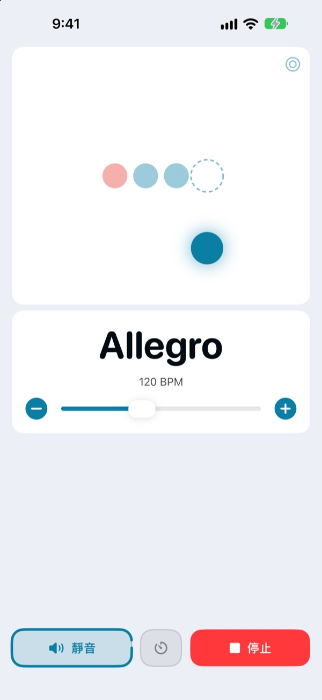
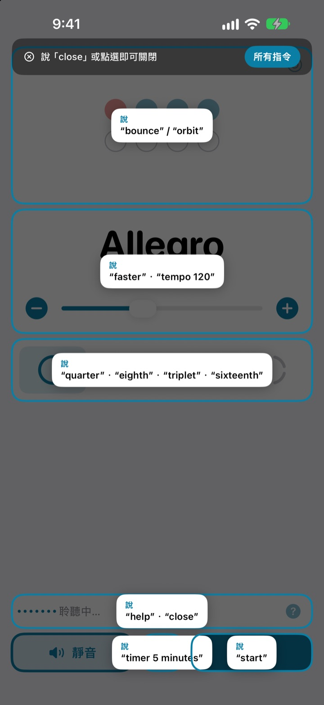
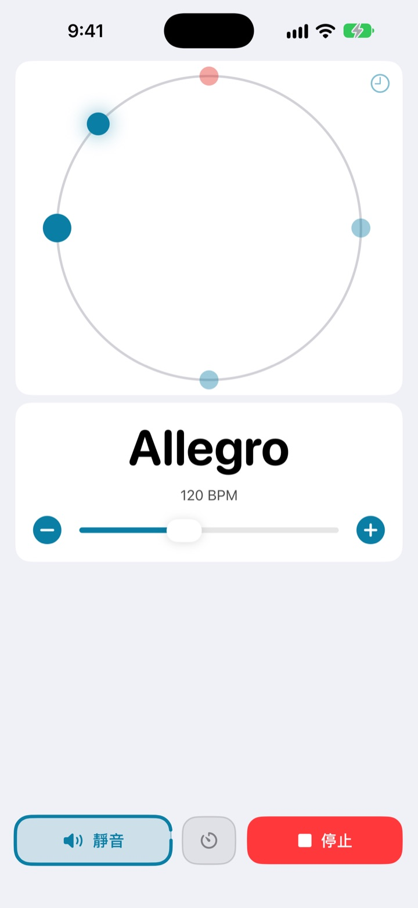
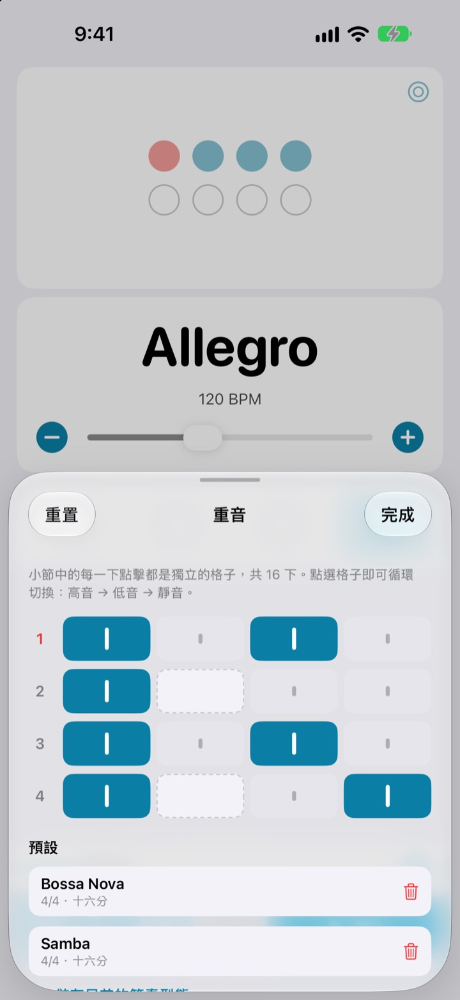

開口試試看
點一下按鈕，或打開麥克風用英文說說看。會發出聲音，請留意音量。
只是想調一下速度，手感卻斷掉了？
放下琴弓、把彈片咬在嘴裡、再點兩下螢幕，剛抓到的手感就不見了。Not My Tempo 讓你維持演奏的姿勢，一句話就能改速度。
說完立刻跟上
用 start、faster、tempo 120 這類簡短的英文單字來說。不需要開啟 iOS 語音控制或任何輔助使用設定，打開 App 就開始聆聽。
忘了指令？說一聲 help，所有能說的指令都會顯示在螢幕上。

節拍也能用眼睛跟
彈跳、軌道、環形三種檢視任你選。每小節第一拍以紅色顯示，聲音也更重。
在軌道檢視跟著節拍點一下，就能看出自己踩得有多準。

每首曲子的重音都能儲存
小節裡的每一下都能設為高音、低音或靜音，並依曲目存成預設。巴薩諾瓦或森巴，做好一次，下次直接選就好。（Pro）

三個步驟就能開始
- 1
打開 App
一打開就開始聆聽。
- 2
允許使用麥克風
只有第一次會詢問麥克風與語音辨識權限。
- 3
開口說或點一下
每個指令在螢幕上都有對應的按鈕。
可以說的指令
- start · stop
- 開始、停止
- faster · slower
- 每次加快或放慢 5 BPM
- up · down
- 每次加快或放慢 1 BPM
- tempo 120
- 直接切換到指定速度
- double · half
- 速度加倍、減半
- three beats
- 更改拍號
- quarter · eighth · triplet · sixteenth
- 四分、八分、三連音、十六分細分
- louder · quieter · mute
- 節拍聲調大、調小、靜音
- volume 60
- 以百分比設定音量
- bounce · orbit
- 切換節拍檢視
- timer 5 minutes
- 設定練習計時器
- practice
- 練習時逐步提高速度（Pro）
- tune
- 打開調音器（Pro）
- help
- 顯示所有指令
- close · done
- 關閉目前的面板
語音辨識使用美式英文，所以指令要用英文單字說，目前不支援中文指令。App 畫面會以中文顯示，每個指令也都能點按鈕完成。
節拍器免費，需要更多再升級 Pro
免費
- 所有語音控制
- 1 到 8 拍，第一拍重音
- 四分、八分、三連音、十六分細分
- 彈跳、軌道、環形三種檢視
- 點拍定速與節拍準度檢測
- 練習計時器
Not My Tempo Pro
- 練習模式：每隔幾小節增加幾 BPM，一路提升到目標速度
- 重音編輯器與依曲目儲存的預設
- 半音階調音器
含免費試用的年度訂閱，或一次買斷、永久使用
語音控制與輔助使用功能未來也永遠對所有人免費。如果你在 Pro 推出前就購買了這個 App，所有 Pro 功能都已經可以使用。
常見問題
可以用中文說嗎？
語音辨識使用美式英文，所以指令要說 start、faster 這類英文單字。指令都是短短的單字，很快就能上手，而且每個指令也都能用按鈕完成。
它聽不懂我說的話。
請確認麥克風狀態是否顯示「聆聽中」。如果是關閉的，點一下「聆聽」即可。環境吵雜或用喇叭大聲播放時，戴上耳機可以讓節拍聲不漏進麥克風，辨識會準確很多。
聆聽自己關掉了。
為了節省電量，幾分鐘沒有指令就會停止聆聽。點一下「聆聽」就能重新開啟。
速度被抓成一半或兩倍。
說 double 或 half 就能立刻修正。
調音器怎麼用？
說 tune，或點速度卡片上的波形按鈕。彈一個音，指示進入綠色區域就代表音準了。要離開時說 close。
我平常使用 iOS 語音控制。
關閉本 App 的麥克風，改為說出按鈕名稱來操作即可。每個按鈕都有 VoiceOver 標籤。
我的聲音會被傳送出去嗎？
不會。語音在裝置上完成辨識，不會被錄音、儲存或上傳。節拍器、語音控制與調音器在沒有網路時也能使用。
要怎麼取消訂閱？
請到「設定 > Apple 帳號 > 訂閱項目」取消。年度訂閱會自動續訂，除非在目前訂閱期間結束前至少 24 小時取消。永久版為一次性付費。
有任何問題或建議，歡迎寫信到 leeo@kakao.com。